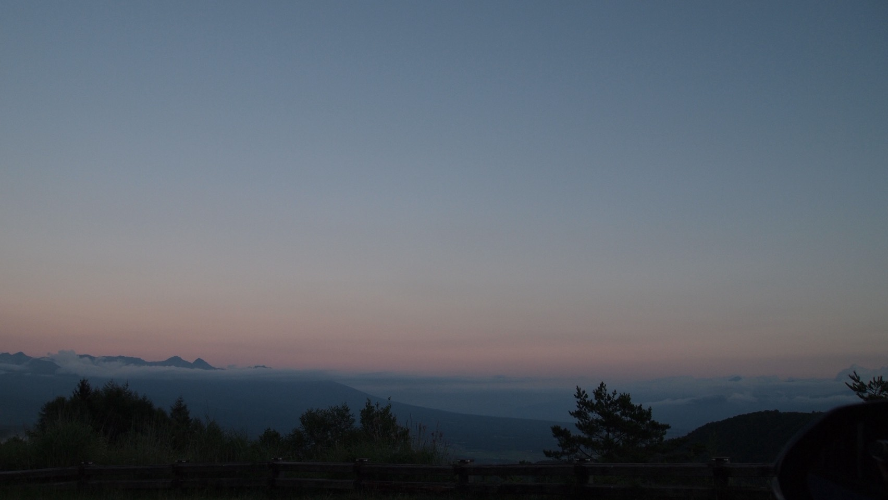

01 / NATURE
静かな時間

自然の中で過ごす静かな時間。
目の前に広がる景色に、思わず足を止めた。
MY PHOTO COLLECTION
日常の中にある、何気ない景色。
自分の目で見つけた世界を写真に残す。
01 / NATURE

自然の中で過ごす静かな時間。
目の前に広がる景色に、思わず足を止めた。
02 / SKY

どこまでも続いていくような青い空。
何気ない景色も、少し視点を変えると特別に見える。
03 / SEA

海を眺めながら、ゆっくりと流れる時間を楽しむ。
その瞬間にしか見られない景色を残していきたい。